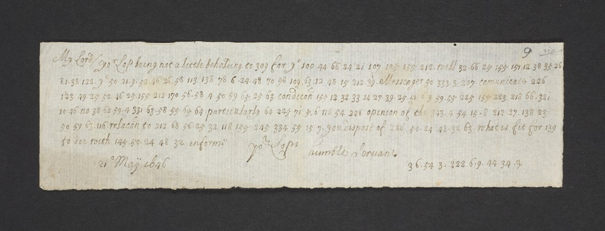
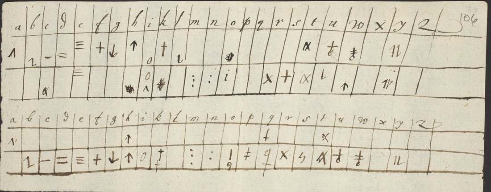
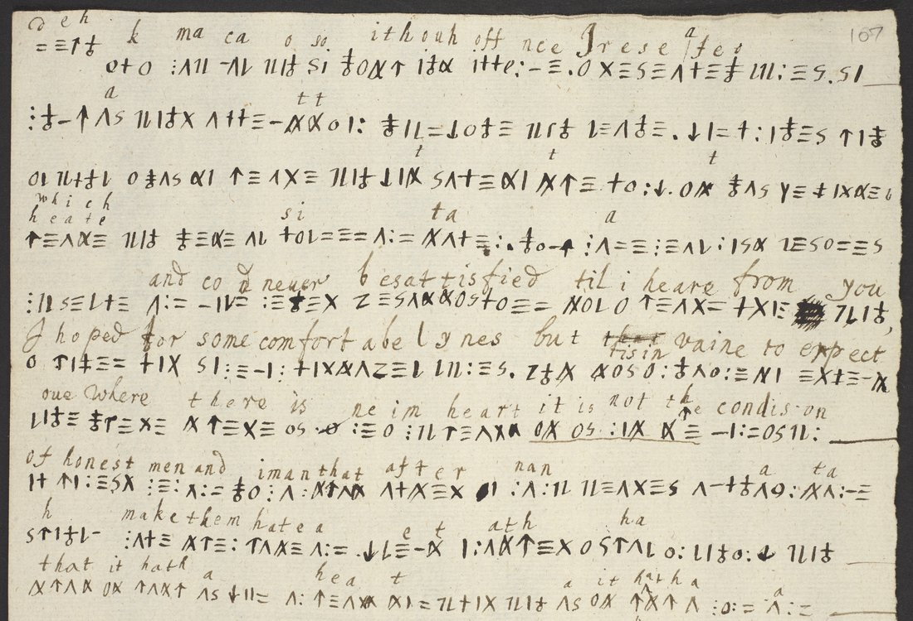

At a glanceNot solved: Cryptiana #5 and #6 · Known key applied: f. 107 only, 122 of 128 words
- The letters
- Cryptiana’s item #5 is Prince Maurice to his brother Prince Rupert, Worcester, 7 July 1645, printed by Warburton with its 93 cipher groups. Item #6 is two intercepted royalist letters of May 1646: one to “My Lord” (21 May), one to the King (13 May).
- Where
- Maurice’s letter: Warburton, Memoirs of Prince Rupert (1849) iii. 133; it is not on DECODE. The intercepts: British Library, Add MS 72438 f. 9r and f. 10r–v (DECODE R8623, R8624). The same volume holds the keys taken in Digby’s coach in October 1645 and the graphic-sign letter f. 107 (R8728).
- The ciphers
- Numeric nomenclators: two-digit figures for letters, higher figures for words and names. f. 9 and f. 10 use two different keys. f. 107 is a different kind of cipher: a simple alphabet of about twenty drawn signs.
- How it was tried
- f. 9, f. 10, f. 104 and the cipher passages of a Trevor letter were transcribed from the DECODE images. All 73 keys in Add MS 72438 were screened by their number ranges, and six letter tables were applied: none gives sense. The f. 106 key sheet deciphered f. 107, checked against a contemporary interlinear gloss. On 22 October 2026 George Lasry’s five reconstructed keys of the King–Queen correspondence of 1645–46 (TNA SP 106, SP106-2, -3, -5, -8) were tried on all five numeric texts: SP106-8 fits f. 104; the rest stay gibberish.
- What f. 107 says
- A woman writes to a royalist officer, an old acquaintance, who was reported killed or taken: “God knowes how ioyfull I was to heare you got safe to the King”. No names, place or date.
- Still open
- All of Maurice’s letter, f. 9, f. 10 and Trevor’s cipher passages: no key in the volume, on DECODE or among Lasry’s SP 106 keys fits, and the texts are too short to rebuild one. f. 104: decoded, not read (4 of 15 sentences hold; 21 code groups have no key material). Six words of f. 107, which with its doubtful words leave the letter at 92.1% of its words read (measured 24 October 2026): coherent sentences, but under the 95% a complete reading needs.
- Credit
- Satoshi Tomokiyo (Cryptiana) listed the two items and quoted the opening of f. 9. The British Library catalogue describes f. 9 and f. 10 as “largely in (undecoded) cipher”.
01 The documents
Satoshi Tomokiyo’s Cryptiana lists, among royalist ciphers of the Civil War with no known decipherment, a letter of Prince Maurice to Prince Rupert (item #5) and two intercepted letters in the British Library (item #6). This page reports what came of trying them, and of the other cipher pieces found next to them.
- Maurice to Rupert, Worcester, 7 July 1645 (#5). Eliot Warburton prints it in his Memoirs of Prince Rupert and the Cavaliers (1849), vol. iii, p. 133, with the cipher as figures: 93 groups, 63 different, the highest 398. Clear words stand between the cipher runs (“By your cipher, you may observe, that … Garrison, … Accordingly, …”). Leven’s Scots army was four miles from Worcester, and Maurice is explaining why he cannot bring his regiments to Rupert at Bristol. “By your cipher” means a cipher Rupert had issued to his brother. Warburton’s source was the Rupert correspondence, BL Add MS 18980–18982. The original is not among the DECODE records of those volumes.
- Add MS 72438 f. 9r (#6, DECODE R8623). One slip to “My Lord”, dated 21 May 1646, verso blank: “Yor Lop being not a little beholding to 309 for ye 100 44 66 24 21 107 105 155 212 well …”. 152 cipher groups between clear words (“Messenger”, “comunicate”, “particularly”, “opinion of the”), signed in cipher “36 54 3 222 6 9 44 34 3”. Figures 3–81 for letters, 100–343 for words. Cryptiana’s excerpt has “500 44 66” and “195”; the image shows 100 and 105.
- Add MS 72438 f. 10r–v (#6, DECODE R8624). A letter to the King, “May it please your Matie”, dated 13 May 1646, endorsed “Quadrupl.” (the fourth copy). 721 cipher groups: letters 1–99, words 100–697, with 360 and 361 very frequent and “430 543” six times (“resolved to expect 430 543”). It is signed “555 697 496”. The right edge of the recto and the left edge of the verso are torn, and the verso is stained. The two intercepts use different keys: f. 9 has no 360 or 361 and no group above 343.

Add MS 72438 is vol. 197 of the Trumbull Papers: Georg Rudolph Weckherlin’s file of cipher keys and intercepts as Parliament’s secretary for foreign tongues. Its core is the bundle of keys found in Lord Digby’s coach after the royalist defeat at Sherburn in October 1645. On DECODE the volume has 81 records: 8 ciphertexts and 73 keys. Two more ciphertexts in it turned up in the search: f. 104r (R8725), an all-numeric letter of 256 groups, and f. 107r (R8728), the graphic-sign letter of section 06. From the Rupert correspondence, Add MS 18982 ff. 51–52 (R8433, DECODE “Bristoll”) was also transcribed, because its cipher has the same shape as Maurice’s.
02 The keys of Digby’s coach
f. 25r (R8627) is the index of the bundle, headed “Cyphers taken in the L. Digbys [coach]”. It numbers the keys 80 to 139 and names each one’s correspondents. Among them are 80 the Countess of Cork, 101 Lord Traquair and Digby, 103 the Earl of Antrim, 104 Thomas Killigrew, 105 Lord Culpeper and Sir L. Dives, 112 Lord Taaffe, 117 the Earl of Bristol, Digby, Sir Richard Greenvill and Doctor Cox, 118 Ormond and Prince Rupert, 119 Lord Inchiquin and Digby, 123 His Majesty’s cipher with the Queen, 125 Mr Browne, 131 Lord Goring, 132 Sir Kenelm Digby and 138 “many sheets, De Vic’s hand”. The number of each key is written on the back of its sheet, so the index ties most DECODE key records to a correspondent. NOTES.md has the full list.
A key can only fit a letter if its number ranges cover the letter’s figures. f. 9 needs letters up to about 81 and words from 100 to 343, with no letter+digit groups. f. 10 needs letters 1–99 and words up to 697. Maurice needs words up to 398. Read from the images, most of the 73 keys fail on this alone. Their word series end far too low (to 105, 144, 152, 200, 274, 293), they use letter+digit groups (a1, p6), they are letters-only or graphic, they are French, Latin or Weckherlin’s own, or they are four-digit codes.
The keys whose ranges came close were applied to the letter runs, which make up most of each text:
- Key 118, Ormond and Prince Rupert (R8655, ff. 59–60): letters 1–80, nulls 81–90, words 91–434. On f. 9, “100 44 66 24 21 107” gives “Aurange Prince, o, r, m, b, Anglesey”. On Maurice, “15 26 342 148 136 13” gives “a m [blank] Design Dungarvon c”. No.
- Key 123, the King with the Queen (R8687, ff. 67–68; R8723 is a decipherer’s worksheet of the same key): on f. 9 and f. 10, gibberish. Its 342 is Broughton, which does not suit f. 104 either.
- Key 125, Mr Browne (R8694): letters 2–79, words 80–371, names to about 698. The ranges fit f. 10, but the result is gibberish.
- The cipher “betwixt the L. Digby & his servant Walsingham (now at Modlen College)” (R8724, ff. 102–103): on f. 9 and f. 10, gibberish. It should be the key of the Walsingham letters R8625/R8626 of 1647.
- The Parliament key R8743–R8745 (“To decypher speedily”) and the Parliament key R8741: gibberish on every text.
- Tomokiyo’s royalist keys of 1644–45 (Charles I–Rupert–Digby–Ormond, with letter+digit codes; Nicholas–Rupert, May and July 1645): the ranges do not fit Maurice, and the May 1645 fragment gives no sense on Maurice or f. 9.
So no key in Add MS 72438 fits f. 9 or f. 10. That is less surprising than it first looks. The coach keys were taken in October 1645, and the intercepts are of May 1646, seven months later, when the King was with the Scots. Their keys were probably never captured with the others.
03 Maurice to Rupert, 7 July 1645: not solved
The letter’s 93 groups fall into 18 different figures below 100 (letters) and 45 from 100 up (words). The most repeated are 148 (5 times), then 15, 229 and 293 (4 each). Neither Tomokiyo’s two known royalist keys of 1644–45 nor any coach key fits it. The figures of Arthur Trevor’s letter to Rupert (section 05) have the same shape, but that letter could not be broken either. A cipher Rupert issued to his brother is not known in print. Unless that key turns up, 93 groups from a nomenclator of about 400 entries cannot be attacked from the ciphertext alone.
04 The intercepts of May 1646, f. 9 and f. 10: not solved
Both letters were transcribed in full from the DECODE images. The figures are in f9_groups.txt and f10_groups.txt, and the transcriptions with the clear words in f9_transcription.txt and f10_transcription.txt. The clear words show what the letters are about without unlocking them. f. 9 is a courtesy letter about a messenger and a “relacon” (report) to be passed on. f. 10 is a long report to the King with clear words like “of severall”, “war”, “seasonably”, “absolute”, “Gent” and “I beleeve”.
A key rebuilt from the ciphertext alone is out of reach. f. 9 has 108 letter groups in 28 runs, for an alphabet of about 80 values. f. 10 has 300 letter groups in 117 runs, with a mean run of 2.6 letters, over about 99 values. A homophonic solver needs much longer runs than that. These are, as before, letters whose key is not in the box.
05 f. 104, and Trevor to Rupert
- f. 104r (R8725). DECODE marks it “Decrypted”, but the sheet has no decipherment on it. It is an all-numeric letter of 19 lines: 253 groups, letters 1–99, words 100–859 (342 the most frequent), with one parenthesis. The back is endorsed “The direction endorst 347: 313: 364”. Keys 118, 123 and 125, R8744 and the Parliament key R8741 were applied, and none gives sense. 22 October 2026: it is in George Lasry’s reconstructed SP106-8, the Queen’s household key of January 1646 (DECODE R924; see its page). 201 of 256 groups take a value unchanged, and the endorsement 347 313 364 reads “The King to the Prince of Wales”. It is a clerk’s fair copy of a letter of Charles I to the Prince. Values were added from Lasry’s own R924 interlinear (116 is can, not BROUGHT; 127 do, 207 may, 450 command, 513 express) and from the letter (
f104_key_additions.tsv). The partial reading (f104_reading.md, Englishf104_en.md):
Only 4 of its 15 sentences hold, and 21 nomenclator groups (466, 543, 534, 668, 643, 502, 769 …) are absent from R924, Lasry’s only letter in this key, or unidentified there, so f. 104 is decoded, not read. No printed text was found (Clarendon State Papers ii and Bruce, Charles I in 1646, searched).I will only now [?lay] a [643] [?command] [?upon] you, which is, that no [?perswasion] or threatning [?whatsoever] [?make] you bring in to [502] before I send for you.
And [192] you shall be [?made] [?believe] that I [?do] when I [?do] not send for you, [?let] the Queen be [?iudge] [?whether] I really send for you or not …
- Add MS 18982 ff. 51–52 (R8433). Arthur Trevor writes to Rupert from Bristol and signs “Ar: Trevor”. DECODE dates it 8 April 1645, but the loss of Sir Thomas Coghill’s house (Bletchingdon, 24 April) puts it at about 28 April. Its 62 cipher groups (54 letters in four runs, 8 words) sit in clear context: “Sr Vivian Molineux, Sr Bryan O’Neile … were by ill weather forced 137 26 50 30 12 … & from thence by night marches they recovered 67 24 43 9 31 52 39”. A seven-letter place name with no repeats would be Chester, for instance. Homophonic annealing with that crib, with “bristol” and with none gives a different English-looking string on every restart: 54 groups over 36 values is far too little. No coach key fits it.
06 f. 107: a letter in graphic signs, deciphered with the key beside it
f. 107r (R8728) is a small sheet of ten lines of drawn signs, with a four-sign heading. A contemporary decipherer wrote a partial gloss over it: some words in full (“I hoped for some comfortabel lynes but tis in vaine to expect”), elsewhere only scattered letters. The leaf before it, f. 106r (R8727), is a key sheet with two graphic alphabets. The lower alphabet is the key of f. 107, and it applies unchanged. The letter also uses a few homophones the sheet does not list: a plain-shaped e, Ʈ for h, ɣ for r, a 7-shaped y and a plain α for t. Some signs look like letters but are key signs: the small circle is i and the upright stroke is o. On the key the colon stands for both m and n, and one sign serves u and v.

Every word the gloss gives was checked against the key, and they agree. The letter has 128 cipher words. Six of them are unread or only guessed, so 122 words (95.3%) are deciphered. In the old spelling, with conjectures in brackets:
[heading: four signs, unread] … if I may cal you so without offence. I rese[ave] few lynes, so much as your affection would giue you leaue. God knowes how ioyfull I was to heare you got safe to the King. It was reported heare you were al kild […] and taken, which made me almost besides myselfe, and cold neuer be sattisfied til I heard from you. I hoped for some comfortable lynes, but tis in vaine to expect one where there is […] my heart. It is not the condision of honest men and woman that after [so] many yeares acquaintance should make them hate and neglect one another. I shal in louing you, that it hath as good an heart to [dye] for you as it hath a mind and …
The writer is a woman (“honest men and woman”), an acquaintance of many years. She writes to a royalist officer who had been reported killed or taken but “got safe to the King”. The text has no names, no place and no date. The key sheet is filed among the coach keys, so the letter probably went to Digby or one of his correspondents before October 1645, but the text does not prove it. The verso is blank, and the text breaks off at the foot of the recto.

07 Method
- Access. The British Library’s own images of Add MS 18980–18982 and 72438 have been offline since the October 2023 cyber-attack. DECODE holds the images but marks them private. Logged in, 115 DECODE records of Add MS 72438, 18982 and 18983 were listed with their metadata (
decode_records.tsv). None has a transcription file, and Add MS 18980 and 18981 have no records at all. - Transcription of f. 9, f. 10, f. 104 and the R8433 cipher runs from the images. The counts were measured on the figure files.
- Screening of the 73 keys by their number ranges and structure, read from the images, followed by the six letter tables applied to the letter runs (
keys.py,test_letters.py). - For R8433, homophonic simulated annealing with an English 1640s 4-gram model, with and without cribs (
trevor_anneal.py). It did not converge. - For f. 107, the f. 106 lower alphabet was applied and checked word by word against the gloss. The homophones it does not list were added from the glossed words. Line 6 was transcribed sign by sign and decoded mechanically (
f107_decode.py) for the figure below.
08 What remains open
- Maurice to Rupert, 7 July 1645: all 93 groups. Blocker: no key material. “Your cipher” is not in Add MS 72438 or on DECODE, and Add MS 18980–18981, Warburton’s source, have no DECODE images.
- f. 9 (R8623), 152 groups, and f. 10 (R8624), 721 groups: all unread. Blocker: no key material. None of the 73 keys in the volume fits, and the letter runs are too short for a ciphertext-only rebuild.
- f. 104 (R8725), 256 groups: in Lasry’s SP106-8, decoded, not read (4 of 15 sentences); the opening line and 21 nomenclator groups have no key material.
- R8433, Trevor to Rupert, 62 groups: unread. Blocker: too short. 54 letter groups over 36 values do not give a stable solution.
- f. 107, six words, graded H/C/M/I as in the README conventions. The four-sign heading “=≡↑ŧ̥” does not make a word (I). The end of “rese[ave]” is “receive” by sense (M). “≡≡=” after “kild” is unread (I). “:≡o” before “my heart” is unread (I). The blotted word before “many yeares” is “so” by sense (C). “=7L” before “for you” is “dye” by sense (M). The gloss skips all six, and there is no second copy. The rest is H: each word is deciphered by the key and, where the gloss covers it, agrees with the gloss.
Overall, 122 of 1,412 cipher tokens are deciphered: 8.6%, with f. 107 counted in words and the other five documents in figure groups. The two items Cryptiana lists are at 0%.
Full texts
The transcription and the decryption of every document on this page, so that the reading can be used and checked. Short files are shown here; all are in the repository.
BL Add MS 72438 f. 107r (DECODE R8728) read in part
A woman's graphic-sign letter in English to a royalist officer: she had heard he was killed or taken, rejoices that he got safe to the King, and reproaches him for neglect after so many years' acquaintance. Deciphered with the lower alphabet of the neighbouring key sheet f. 106 (R8727), checked against the partial interlinear gloss; 122 of 128 words. Only line 6 is transcribed sign by sign (in f107_decode.py).
Builds coherent sentences, but under the read bar of 95% of words read as sense (92% here); the holes are marked in the reading.
Transcription: f107_decode.py
Decryption
# BL Add MS 72438 f. 107r (DECODE R8728): graphic-sign letter, English, read 9 Oct 2026 with the second
# alphabet of f. 106 (R8727), checked word by word against the partial interlinear gloss.
# Key (f. 106 lower alphabet, as used here): a ∧ | b Ꝛ | c – | d = | e ≡ (also plain e) | f + | g ↓ | h ↑ (also Ʈ) |
# i small circle | k † | l ɩ | m/n : (⁝) | o vertical stroke (also ɩ, 7-like y-stroke) | p ǂ | qu ŧ̥ | r X (also ɣ) |
# s ʂ | t Ⱥ (crossed alpha; plain α also t) | u/v ŧ̥ | w ǂ̥ (also ŧ̥) | y ıı (also 7) | x X.
# Signs in the cipher that look like plain letters are themselves key signs (circle = i, stroke = o).
# One line per manuscript line; [?] = sign group not read, [x?] = conjectural reading.
L0 [dehu?]
L1 if i may cal you so without offence. I resea[ve?] few lynes. so
L2 much as your affection would giue you leaue. god knowes how
L3 ioyfull I was to heare you got safe to the king. it was reported
L4 heare you were al kild [eed?] and taken. which made me almost besodees
L5 myselfe and cold neuer be sattisfied til I heard from you.
L6 I hoped for some comfortable lynes but tis in vaine to expect
L7 oue [one] where there is [nei?] my heart it is not the condision
L8 of honest men and wiman that after [?o] many yeares acquaintance
L9 shoul[?d] make them hate and [ne]glect [?one another]. I shal in louing you
L10 that it hath as good an heart to [dye?] for you as it hath a mind and
# Measured: 129 cipher words, 6 not read or conjectural ([dehu?], [ve?], [eed?], [nei?], [?o], [dye?]) = 95.3% read.
# Recount 9 Oct 2026: 129 tokens includes the editorial "[one]" after "oue"; 128 cipher words, 122 read = 95.3%.
# Spelling slips by the writer: 'oue' for one, 'onather'-type order in L9 ('one another' written o-n-a-t-h-e-r),
# 'heate'/'wete' (α used for r in L4: here, were), 'besodees' (besides).
# Verified 23 Oct 2026 (reading audit v2, against the image IMG_R8728_I40333_P1 and the interlinear gloss): two
# words partly carried and now bracketed: 'one another' is written o-n-a-t-h-e-r ('onather', the gloss has
# nothing over it), and 'should' ends in the c sign (–), not d (=). Reading body: 0.273 clean sentences on the
# modern word list (period spelling), 0.818 counting explicit holes only (9 of 11), every conjecture a hole.Maurice to Rupert, Worcester, 7 July 1645 (Warburton iii. 133) decoded, not read
Prince Maurice explains why he cannot bring his regiments to Rupert at Bristol, with the Scots army four miles from Worcester ('By your cipher, you may observe ...'). Not deciphered: no key in Add MS 72438 or in print fits the 93 groups.
A mechanical decode with holes in most sentences: shown so that the transcription and the key can be checked and improved, not as a reading.
Transcription
# Maurice to Rupert, Worcester 7 July 1645, cipher groups as printed in Warburton iii. 133 (from maurice1645.py), one run per line # before: observe that 15 26 342 148 136 13 325 162 84 212 26 334 61 340 199 39 328 353 149 49 329 26 351 397 150 100 148 212 66 336 156 217 28 229 355 82 16 15 194 229 214 84 324 131 293 252 355 150 293 148 231 22 194 228 293 323 151 351 # before: Garrison, 6 15 148 64 229 354 37 323 217 41 398 373 150 172 170 48 227 214 293 148 66 84 270 361 # before: Accordingly, 151 244 229 149 213 324 239 274 185 12 15
BL Add MS 72438 f. 9r (DECODE R8623), 21 May 1646 decoded, not read
Intercepted royalist letter to 'My Lord', largely in a numerical cipher; not deciphered (no key of the volume fits).
A mechanical decode with holes in most sentences: shown so that the transcription and the key can be checked and improved, not as a reading.
Transcription
# BL Add MS 72438 f. 9r (DECODE R8623), intercepted letter to "My Lord", 21 May 1646. Verso blank. # Transcribed from the DECODE image 9 Oct 2026. Clear words in [brackets]; ? = uncertain reading. # Line breaks follow the manuscript. [My Lord / Yor Lop being not a little beholding to] 309 [for ye] 100 44 66 24 21 107 105? 155 212 [well] 32 66 25 155 151 12 38 35 26 81 38 122 [ye] 50 21 9 52 46 26 58 113 138 78 6 24 48 70 58 109 63 12 48 15 212 39 [Messenger] 50 333 3 207 [comunicate] 226 123 49 25 52 46 25 155 212 170 56 58 4 50 59 65 25 63 [condicon] 155 12 32 33 14 27 39 25 51 6? 9 59 55 225 155 223 218 66 321 10 46 120? 38 62 59 4 331 63 58 55 65 64 [particularly] 64 225 71 5 6 118 54 226 [opinion of the] 343 4 54 15 8 212 27 138 23 50 59 63 116 [relacon to] 212 68 56 25 32 118 155 245 334 55 15 7 [you dispose of] 226 50 24 48 32 63 [what is fit for] 139 [to doe with] 145 50 24 48 32 [informn] [Yor Lops humble servant] 36 54 3 222 6 9 44 34 3 [21o Maij 1646]
BL Add MS 72438 f. 10r-v (DECODE R8624), 13 May 1646 decoded, not read
Intercepted letter to King Charles I, endorsed 'Quadrupl.' (fourth copy), in a numerical cipher; not deciphered.
A mechanical decode with holes in most sentences: shown so that the transcription and the key can be checked and improved, not as a reading.
Transcription
# BL Add MS 72438 f. 10r (DECODE R8624), intercepted letter to King Charles I, 13 May 1646 (DECODE date). # Endorsed top right "Quadrupl." (fourth copy). Right edge torn: line ends lost on lines 1-10. # Transcribed from the DECODE image 9 Oct 2026. Clear words in [brackets]; ? = uncertain; ... = torn/illegible. [May it please your Matie] 355 251 7 67 280 [ye] 647 43 20 280 681 209 200 194 409 340 [a] 50 11 46 81 19 12 296 90 109 70 1 103 50? 200 216? [finishd] 192 27 18 40 82 14 69 6 109 60 47 18 56 45 280? 100 [&] 292 37 68 8... 282 94 84 215 35 190 211 335 216 [of severall] 228 9 69 57 173 364 84 215 99 361 286 360 [war] 31 74 4 83 [over] 71 67 69 70 110 20 361 [other] 36 78 46 18 81 2 [St] 25 49 17 44 84 31 77 4 86 31 57 72 210 110 87 112 282 ... 360 329 562 360 193 162 361 382 67 [of ye] 572 496 112 [express] 216 364 190 267 200 84 282 281 117 20 44 68 18 60 57 1 [for] 193 56 69 75 37 74 112 110 409 [in ye] 512 213 190 ? [seasonably] 46 89 90 70 71 45 1 43 19... 2 81 40 17 69 90 370 59 20 405 2 [That ye] 66 74 489 81 [a] 342 131 82 10 91 44 4 162 614 40 31 1 60 11 7 58 282 4 112 [Mr] 629 360 132 360 384 409 504 413 [ye] 274 667 190 240? 103 112 367 408 [as] 173 361 510 [instr...] 11 91 44 360 341 46 546 [to] 430 543 94 [for] 413 367 200 304 81 504 123 190 [absolute] 228 597 56 360 183 210 279 100 697 361 330 402 361 56 67 [Gent] 406 340 360 375 409 504 102 405 93 364 391 267 [there] 122 270 2... [what] 478 96 162 355 430 [depart] 11 19 70 35 391 200 270 596 81 [a] 78 281 81 4 173 430 543 269 19 280 429 123 [what] 199 103 132 284 280 368 585 56 [not] 173 537 126 194 385 [close] 121 ? 40 17 45 4 279 1 391 204 ... 112 [by ye] 593 280 75 31 [thy] 106 56 542 360 361 132 60 210 44 67 70 280 [both] 528 59 103 110 15 [conc:] 430 543 211 212 46 385 56 105 1 478 101 123 [I beleeve &] 292 56 79 104 67 4 [other] 56 20 364 361 542 405 422 7... 35 219 47 90 84 409 361 613 59 3 [till] 367 351 14 109 191 4 [a] 470 117 25 31 81 64 360 182 191 212 [ye] 276 413 267 183 368 178 56 109 537 [confidence] 360 104 39 83 70 37 40 19 60 69 360 366 100 35 1 210 211 [ab...] [comfort & encourage] 430 175 166 56 11 25 40 67 90 44 59 194 360 201 284 697 162 363 411 430 279 543 142 378 259 [averse] 21 111 271 [extremely] 228 67 48 17 8 150 96 162 [a] 618 126 212 196 [there] 122 36... 220 150 100 496 201 391 194 298 [&] 620 273 646 665 170 413 126 643 665 258 365 [double] 361 639 391 581 81 162 93 285 447 407 165 56 84 281 45 1 [besides] 194 111 385 256 63 280 [yor Maties] 71 31 34 19 ... # --- f. 10v (left edge torn: line starts lost; water stain in the middle; [illeg] = groups lost under the stain) [...it is beleived that] 391 350 270 200 375 57 162 258 365 644 667 57 173 362 6? [illeg ~3] 361 613 56 351 [face] 356 80 48 18 82 1 409 [a] 470 117 25 31 83 64 210 267 [perhaps] 172 382 280 285 215 697 [Neighbours] 401 391 204 200 340 338 [...them selves] 336 167 10 391 [beleeve] 367 212 43 153 270 360 56 45 40 19 35 691 5? [illeg ~3] ? 3 648 665 170 173 537 2 123 361 [difference] 57 99 3 44 194 121 45 391 9 70 361 571 112 522 57 [I beleeve] 224 363 255 [hitherto] 173 361 56 69 [...me from] 192 361 404 209 304 264 568 211 162 [certaine] 212 2 40 70 17 57 69 60 ? 412 190 [resolved to expect] 430 543 57 81 40 18 69 90 370 58 103 691 88 93 569 71 40 89 50 11 70 19 216 [with some of] 504 202 596 81 ... 192 327 118 100 123 [thanks be to God there is noe] 697 493 212 210 126 48 87? 85? ? 59 59 85 20 80 31 11 9 83 97 [onely it makes] 193 36 67 10 70 19 219 496 101 391 [heare daily] 173 504 585 56 339 57 105 272 57 108 ... 279 95 102 362 367 504 71 75 106 [illeg ~3] 645 [peece] 280 361 282 361 50 40 8? ?0 280 84 70 81 83 216 44 282 1 85 215 112 199 [made divers] 59 84 31 45 35 212 360 562 123 [done noe great hurt. God preserve] ... 173 103 429 691 10 [wch is ye earnest prayers of / Yor Sacred Maties most obedient Servant] 555 697 496 [13o Maij 1646]
BL Add MS 18982 ff. 51-52 (DECODE R8433), [28] Apr 1645 decoded, not read
Arthur Trevor to Prince Rupert from Bristol, mostly clear (Sir Vivian Molineux, Sir Bryan O'Neile, the Prince of Wales's journey westward) with short numerical cipher passages; not deciphered.
A mechanical decode with holes in most sentences: shown so that the transcription and the key can be checked and improved, not as a reading.
Transcription
# BL Add MS 18982 ff. 51-52 (DECODE R8433): Arthur Trevor to Prince Rupert, Bristol, [2?]8 April 1645, signed "Ar: Trevor". # Cipher passages only, with the clear context in [brackets]; groups are separated by dots in the MS. # Transcribed from the DECODE image 9 Oct 2026. The 'c' after 54 in DECODE-preview reading is '&'. [... I will very dutifully observe your pleasure.] 127 25 45 5 15 22 41 4 11 57 32 120 75 222 76 33 44 32 21 110 [Sr Vivian Molineux, Sr Bryan O'Neile & many gentlemen of Quality, they were by ill weather forced] 137 26 50 30 12 45 7 32 67 5 147 6 22 45 4 54 [& from thence by night marches they recovered] 67 24 43 9 31 52 39 [... The P. of Wales journey westward proves very hopeful ... the Country are to be his Paymasters. I doe not find they much insist to have] 27 37 25 22 45 8 32 46 69 121 45 39 37 45 17 16 44 12 67 # 137 is written over an earlier group. Later clear text: Col. Slingsby taken by the enemy; loss of Sir Tho. Coghill's house near Oxon (Bletchingdon, surrendered 24 April 1645, so the date is probably 28 April).
BL Add MS 72438 f. 104r (DECODE R8725) decoded, not read
Charles I to the Prince of Wales (the endorsement '347 313 364' decodes as 'The King to the Prince of Wales'), a clerk's all-numeric fair copy, undated [1646?]: the King is content that the Prince has been referred to the Queen, and lays a command on him that no persuasion or threatening whatsoever make him [come into England?] before his father sends for him; a summons he has not really sent is to be judged by the Queen. Deciphered in part with George Lasry's key 'TNA SP106-8' (DECODE R924) and 35 values from R924's interlinear and this letter's contexts.
A mechanical decode with holes in most sentences: shown so that the transcription and the key can be checked and improved, not as a reading.
Transcription
# BL Add MS 72438 f. 104r (DECODE R8725, marked "Decrypted" on DECODE but there is no decipherment on the sheet). # All-numeric cipher, groups separated by colons; one parenthesis (lines 7-8) as in the MS. f. 104v blank. # Below: "The direction endorst 347: 313: 364:". Transcribed from the DECODE image 9 Oct 2026. 227 81 102 312 85 108 131 56 102 124 88 41 5 53 17 2 40 179 180 23 149 122 859 52 215 60 313 217 305 342 162 293 784 3 15 7 45 11 39 81 22 236 206 466 102 173 543 111 351 47 613 40 108 101 293 534 174 206 668 38 32 26 45 330 141 58 2 8 11 87 53 176 342 313 351 313 308 342 174 206 43 5 61 22 ( 331 116 513 206 307 47 236 304 188 109 63 52 26 58 315 206 40 2 34 18 11 ) 173 325 242 233 17 25 68 12 5 643 450 320 342 327 180 305 230 44 22 45 66 102 175 237 60 46 87 26 103 49 176 334 293 136 211 342 118 174 313 502 109 141 173 275 141 342 108 192 342 279 109 208 429 305 173 127 329 173 127 229 275 141 342 192 351 109 10 54 90 55 2 341 173 53 11 100 71 275 141 342 237 229 412 176 342 305 173 325 275 141 342 161 293 1 39 22 173 207 127 179 326 73 9 60 51 238 769 63 19 26 40 108 315 173 168 351 325 229 45 52 15 79 109 41 174 82 2 30 50 548 47 76 132 69 17 11 40 45 176 32 28 62 46 60 320 342 96 347 # endorsement 347 313 364
Decryption
<!-- Reading of BL Add MS 72438 f. 104r (DECODE R8725), built 22 Oct 2026 by Claude Opus 5.5 (reading audit, batch b10).
Rests on: the transcription f104_transcription.txt, checked line by line on the DECODE image IMG_R8725_I40320_P1
(6288 x 8451 px; no label changed); George Lasry's reconstructed key "TNA SP106-8" (DECODE R924, file D3089, uploaded
23 Oct 2020; the key of Henrietta Maria's household letter of January 1646), applied unchanged; and the values in
f104_key_additions.tsv, read from this letter's own contexts and from the contexts of the same groups in
Lasry's interlinear decipherment of R924 (D3091). Decoder: f104_decode.py. The endorsement "The direction
endorst 347: 313: 364" decodes with the same key as "The King to the Prince of Wales". No contemporary decipherment,
clear copy or printed text was found (see f104_reread_log.md).
Marks: plain = every figure carries the word under Lasry's key; [?word] = partly carried, or a code value read from
context (f104_key_additions.tsv); [word] = supplied, nothing carries it; [nnn] = a code group not identified;
[…] = not read. Spelling of the decode kept (perswasion, threatning, soone, behinde), punctuation added. -->
# Add MS 72438 f. 104r: Charles I to the Prince of Wales, [1646?]
Endorsed: "The direction endorst" [?the King] [?to] [?the Prince of Wales] (347 313 364).
## Reading
[227] [81] as [312] c and [131] [56] as [124].
Charles, it is a great [?contentment] to me that you have so [?true] a sence of my [466] as I [543] by the Queen's
letters, and are so [534] in my [668] [38]les [330] for referring you to the Queen to [308] you in my [?name]
([?who] [?can] [?express] my [307]s of this [188] better [?then] myselfe).
I will only now [?lay] a [643] [?command] [?upon] you, which is, that no [?perswasion] or threatning [?whatsoever]
[?make] you bring in to [502] before I send for you.
And [192] you shall be [?made] [?believe] that I [?do] when I [?do] not send for you, [?let] the Queen be [?iudge]
[?whether] I really send for you or not; [?assuring] you that I will send for you [161] soone [as] I [?may] [?do] it
with [?both] our [769]ties.
And [?then] I hold the Queen will not [?stay] behinde.
[?God]s [?blessing] [?light] [?upon] you. [96] The King.
## Notes
* Opening line (227 81 102 312 85 108 131 56 102 124): does not read; perhaps a date or place line, or the
copyist's heading. Not counted as part of the letter's sense.
* Nulls: 3, 7, 12, 30 and 50 are word spaces ('_') throughout Lasry's own interlinear of R924 (D3091); here they
fall inside "a sence" (3-a-7-s-e-n-c-e), "lay a" (l-a-y-12-a) and before "God's" (30 50).
* "a sence": 81 = c from this word only (81 is not in R924); "[?true]" (784) is a conjecture from the T-section and
R924's "if this be all 784, the consideration of".
* "[?who] [?can] [?express]": 116 is BROUGHT in Lasry's key file, but all three R924 contexts read "can"; 513 =
express from R924's "513-ions you use"; 331 = who is from this sentence only.
* "[?whatsoever]": 334-so-136, with 334 = what from R924 ("had seen 334 might have been") and 136 = ever (E-section).
* "[?perswasion]": the figures give p-e-s-w-as-ion; the r is not written.
* "[?God]s [?blessing]": 548-s b-132-m-l-e-s-s-ing; 548 = God is a conjecture (G-section, before HUMBLE 550), and
132 and the m inside "blessing" are not explained. Read as the closing blessing with doubt.
* "And [192] you shall be made believe": 192 = let reads the second clause ("let the Queen be iudge"), not this one;
it is left as a code here.
* Sense: the King commands the Prince, who is with the Queen, not to let himself be persuaded or threatened into
[coming to England?] before his father sends for him; any summons he has not really sent is to be judged by the
Queen. This fits the Prince's stay at Paris from July 1646 and the King's captivity with the Scots at Newcastle,
but the letter carries no date.Translation
<!-- English of f104_reading.md (BL Add MS 72438 f. 104r, DECODE R8725), 22 Oct 2026, Claude Opus 5.5. Same holes as the reading: [?word] = partly carried or a code value read from context; [word] = supplied; [nnn] = unidentified code group. Spelling modernised. Decoded, not read: about a quarter of the sentences hold as they stand. --> # Add MS 72438 f. 104r: Charles I to the Prince of Wales, [1646?] (English) Endorsed: [?The King] [?to] [?the Prince of Wales]. ## Translation [227] [81] as [312] c and [131] [56] as [124]. Charles, it is a great [?contentment] to me that you have so [?true] a sense of my [466] as I [543] by the Queen's letters, and are so [534] in my [668] [38]les [330] for referring you to the Queen to [308] you in my [?name] ([?who] [?can] [?express] my [307]s of this [188] better [?than] myself). I will only now [?lay] a [643] [?command] [?upon] you, which is, that no [?persuasion] or threatening [?whatsoever] [?make] you bring in to [502] before I send for you. And [192] you shall be [?made] [?to believe] that I [?do] when I [?do] not send for you, [?let] the Queen be [?judge] [?whether] I really send for you or not; [?assuring] you that I will send for you [161] soon [as] I [?may] [?do] it with [?both] our [769]ties. And [?then] I hold the Queen will not [?stay] behind. [?God]'s [?blessing] [?light] [?upon] you. [96] The King.
09 Sources
- British Library, Add MS 72438 (Trumbull Papers vol. 197), catalogue description: f. 9r (DECODE R8623), f. 10r–v (R8624), the index f. 25r (R8627), keys R8628–R8745, f. 104r (R8725), the key sheet f. 106r (R8727), f. 107r (R8728). The DECODE images need a login.
- British Library, Add MS 18982 ff. 51–52, Arthur Trevor to Prince Rupert (DECODE R8433).
- Eliot Warburton, Memoirs of Prince Rupert and the Cavaliers (London, 1849), vol. iii, p. 133: Maurice to Rupert, Worcester, 7 July 1645.
- Satoshi Tomokiyo, Cryptiana, the pages on Charles I’s ciphers: the two items, the opening of f. 9, and the royalist keys of 1644–45.
Notes, transcriptions, the f. 107 reading and the scripts: targets/rupert/ in the repository.